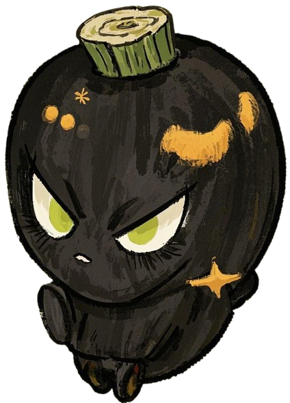
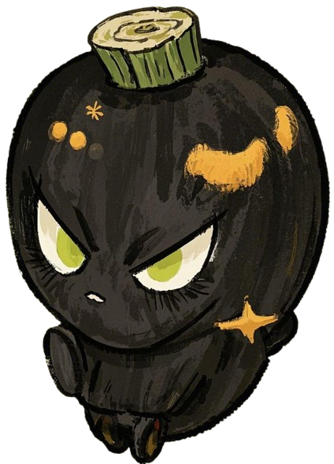

认识附子
附子，是乌头科植物乌头的子根，经过特殊加工炮制后成为中药材。它是我国传统中医药中极具特色的温热药物，具有回阳救逆、补火助阳、散寒除痛的功效。
江油附子的历史渊源
江油附子历史悠久，可追溯至唐代。江油独特的地理环境和气候条件，造就了品质上乘的道地药材。江油附子以其"个大、肉厚、质优"的特点，在中药材市场上享有盛誉。
政府帮扶
近年来，江油市当地政府大力支持普照村的附子产业发展，通过产业规划、技术指导、市场对接等多种方式，帮助农户发展附子种植。通过"公司+基地+农户"的模式，形成了完整的产业链，带动了当地经济发展。
 
